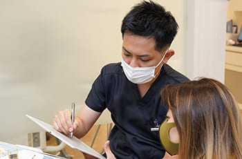
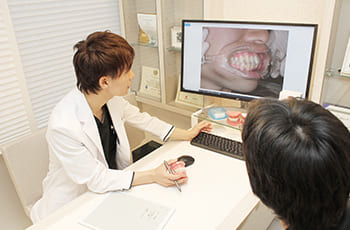
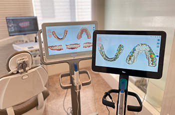
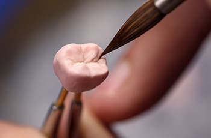
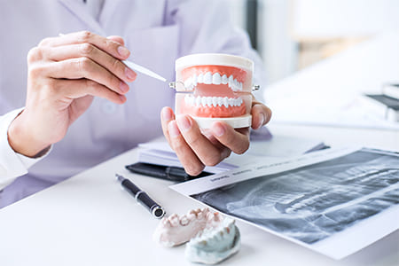
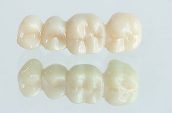
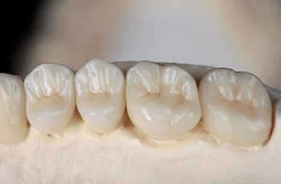
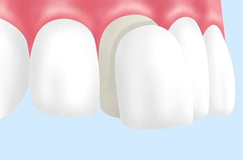
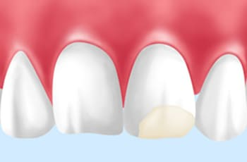

- 新宿の歯医者・矯正歯科「新宿ルーブル歯科・矯正歯科」TOP
- 審美歯科・セラミック治療
当院の審美歯科・セラミック治療が
選ばれる4つの理由
1：見た目と噛み合わせを両立させ、
長持ちする治療をご提供

セラミック治療は、銀歯より長持ちするものの寿命があるため定期的なメインテナンスや再治療が必要です。新宿の歯医者「新宿ルーブル歯科・矯正歯科」では患者さまの負担を軽減するため、噛み合わせを重視して再治療の回数を減らす工夫をしています。
特に奥歯は噛み合わせを決める重要な歯です。当院ではフェイスボウトランスファーという機器を使用し、噛み合わせやあごの動きを再現。患者さまに合った最適な噛み合わせを事前に確認し、治療を進めます。
2：矯正医と連携して多角的な視点で
バランスを考えた治療

当院では、在籍する矯正医と連携して患者さまのお顔全体のバランスを考えたセラミック治療を行っています。
セラミック治療では、歯の調和や噛み合わせ、スマイルバランスなどを考慮した上で治療することが大切です。また、審美面を高めるためには歯と唇の黄金比を考える必要があります。このように当院では矯正医と連携して多角的な視点でセラミック治療を進められます。
3：3Dシミュレーションで治療後の
イメージをお見せする

当院では、患者さまに3Dスキャンによるシミュレーションデータをお見せします。患者さまも治療後のイメージを視覚的に理解していただけて好評です。また、歯科医師と患者さまの間でゴールを共有できるため、より理想的な治療を進めることが可能になります。3Dスキャンによりお口の状態をデータ化できるため、精密なセラミック歯の製作にも役立ちます。
4：専門歯科技工士が細部にこだわって
セラミック歯をデザイン

セラミック治療は審美性や機能性を高めるために行うものであるため、セラミック歯の質がとても重要です。当院ではセラミック専門の歯科技工士が、光の反射やグラデーションなど細部にこだわってセラミック歯を製作します。技術・経験はもちろん、熱意のある専門の歯科技工士に依頼しているため、高品質なセラミック治療をご提供できます。
オーダーメイドの審美歯科・
セラミック治療をご提供します

歯科治療には「虫歯・歯周病を治す」「しっかり噛めるようにする」機能面と、「歯を白くする」「歯並びを整える」審美面といった2つの側面があります。審美歯科治療とは、この2つの側面を満たす治療です。
審美歯科では美しい白さと高い耐久性、さらに汚れがつきにくいセラミック素材が使用されます。当院では患者さま一人ひとりの歯の色や形、さらに矯正医と連携してお顔のバランスにまでこだわったオーダーメイドの審美歯科・セラミック治療をご提供します。美しく機能的な白い歯を手に入れたいという方は、新宿の歯医者「新宿ルーブル歯科・矯正歯科」にご相談ください。
このようなお悩みがあれば
セラミック治療がお勧め
- 銀歯が目立つので思い切り笑えない
- 被せ物や詰め物が変色して困っている
- 歯に白さがなく黄ばんでいる
- 前歯の形が良くない
- 前歯にすき間があって歯を見せられない
- 歯ぐきの黒ずみが気になっている
詰め物・被せ物の種類
セラミック

セラミックは、陶器と同じ素材で金属を含まず表面がツルツルしています。そのため汚れがつきにくく、透明感のある美しい白さを長続きさせられることがメリットです。また、耐久性も高いため再治療リスクを大幅に抑えることができ、しっかりと噛む楽しみを取り戻すことができます。審美面・機能面を両立できる素材です。
ジルコニア

ジルコニアは白い金属とも呼ばれ、高い強度を誇る素材です。人工ダイヤモンドとも称されて装飾品にも使われ、白く美しい見た目を長く維持できます。着色汚れがつきにくく、メタルフリーであるため金属アレルギーの心配もありません。また、細菌が付着しにくいことから、お口の健康を維持するのにも役立ちます。
その他の治療
ラミネートべニア

ラミネートベニアは、歯の表面を削ってセラミック製の薄い人工歯を貼り付ける治療法です。セラミック治療よりも歯を削る量が少なく神経を削ることもないため、患者さまの歯への負担が少ないことが特長です。歯の表面を丁寧かつ滑らかに削ったって特殊な接着剤で貼りつけるため、ホワイトニングでは白くできない歯であっても長く白さを保てます。
ダイレクトボンディング

欠けた歯や歯の細い部分に数種類のプラスチックを直接盛りつけ、天然歯のような自然な白さと形を再現する治療法です。当院では審美修復用のプラスチックを使用し、多数の色調を重ねることで、違和感なく患者さまの歯を整えることができます。変色しにくさや強度の高さ、さまざまな症例に対応できる点がメリットです。